DC trip
January 2010
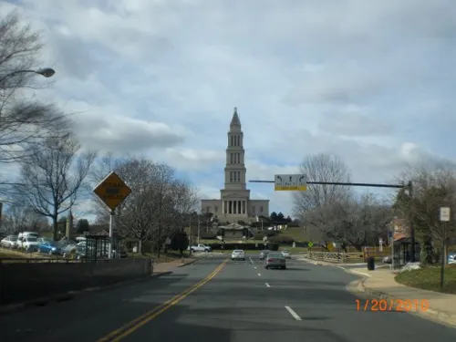
In January 2010 I spent a day around Mount Vernon and the George Washington Masonic National Memorial in Alexandria.
The album covers the Mount Vernon grounds, the Memorial tower and museum rooms, and a view toward the Washington Monument from the observation level.


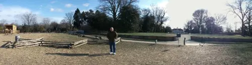

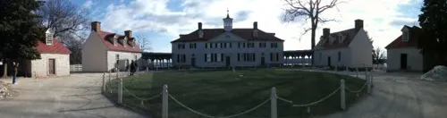

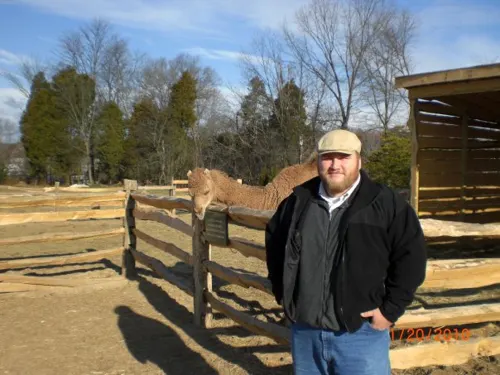

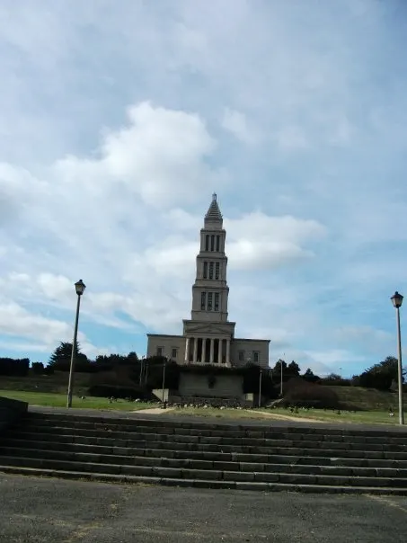

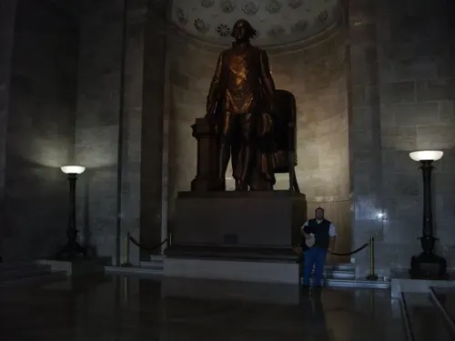

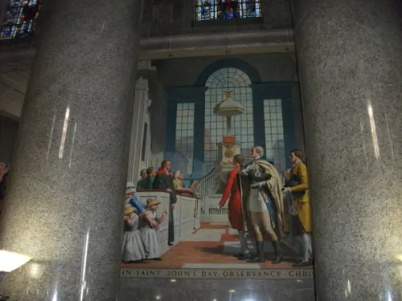

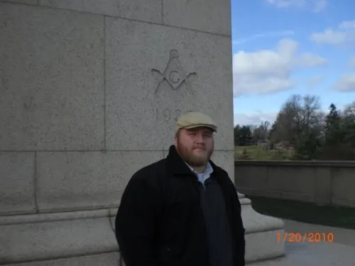

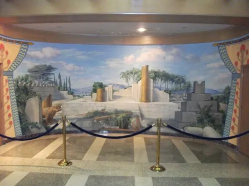

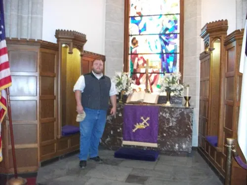

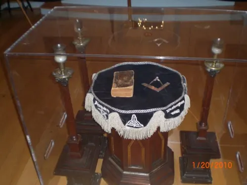

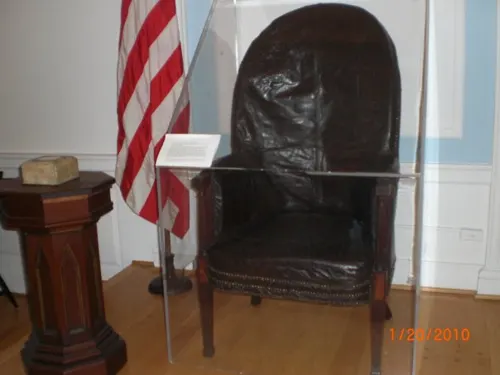

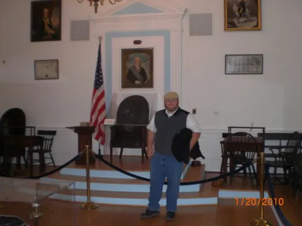

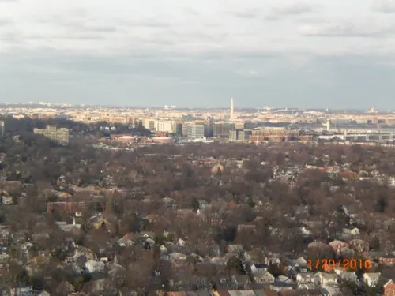